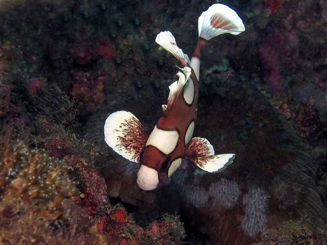

			  
			  
			  
            <DIV align="center"><!-- RRS4 <A href="javascript:Onetransport()"> --> </A></DIV>
              </TD>
            </TR>
            <TR>
              <TD bgcolor="#ffffff">
                <DIV align="center">
                  <SELECT name="Oneslide" class="SmallBlack" onChange="Onechange();">
				<OPTION value="Images/BI_Fish_Group_02/01_Juvenile_Harlequin-Sweetlips.jpg" selected>01 Juvenile Harlequin-Sweetlips</OPTION>
				<OPTION value="Images/BI_Fish_Group_02/02_Sand_Perch.jpg">02 Sand Perch</OPTION>
				<OPTION value="Images/BI_Fish_Group_02/03_Lion_Fish_2.jpg">03 Lion Fish </OPTION>
				<OPTION value="Images/BI_Fish_Group_02/02_Sand_Perch.jpg">04 Frogfish</OPTION>
				<OPTION value="Images/BI_Fish_Group_02/03_Lion_Fish_2.jpg">05 Fish Ball</OPTION>
				<OPTION value="Images/BI_Fish_Group_02/04_Frogfish.jpg">06 Juvenile Emperor Angelfish</OPTION>
				<OPTION value="Images/BI_Fish_Group_02/05_Fish_Ball.jpg">07 Glass-Eyed Snapper</OPTION>
				<OPTION value="Images/BI_Fish_Group_02/06_Juvenile_Emperor_Angelfish.jpg">08 Harlequin Sweetlips</OPTION>
				<OPTION value="Images/BI_Fish_Group_02/07_Glass-Eyed_Snapper.jpg">09 Goatfish Gathering</OPTION>
				<OPTION value="Images/BI_Fish_Group_02/08_Harlequin_Sweetlips.jpg">10 French Angelfish</OPTION>
				<OPTION value="Images/BI_Fish_Group_02/09_Goatfish_Gathering.jpg">11 Cleaner Wrasse</OPTION>
				<OPTION value="Images/BI_Fish_Group_02/10_French_Angelfish.jpg">12 Cardinalfish</OPTION>
				<OPTION value="Images/BI_Fish_Group_02/11_Cleaner_Wrasse.jpg">13 Fang Blenny Hideout </OPTION>
				<OPTION value="Images/BI_Fish_Group_02/12_Cardinalfish.jpg">14 Glassy Sweepers</OPTION>
				<OPTION value="Images/BI_Fish_Group_02/13_Fang_Blenny_Hideout_2.jpg">15 Giant Frogfish</OPTION>
				<OPTION value="Images/BI_Fish_Group_02/14_Glassy_Sweepers.jpg">16 Tiny Frogfish</OPTION>
				<OPTION value="Images/BI_Fish_Group_02/15_Giant_Frogfish.jpg">17 Clown Triggerfish</OPTION>
				<OPTION value="Images/BI_Fish_Group_02/16_Tiny_Frogfish.jpg">18 Blue Chromis</OPTION>
				<OPTION value="Images/BI_Fish_Group_02/17_Clown_Triggerfish.jpg">19 Banded Butterflyfish</OPTION>
				<OPTION value="Images/BI_Fish_Group_02/18_Blue_Chromis.jpg">20 Executing a Turn</OPTION>
				<OPTION value="Images/BI_Fish_Group_02/19_Banded_Butterflyfish.jpg">21 Map Puffer</OPTION>
				<OPTION value="Images/BI_Fish_Group_02/20_Executing_a_Turn.jpg">22 Peacock Flounder</OPTION>
				<OPTION value="Images/BI_Fish_Group_02/21_Map_Puffer.jpg">23 Red Coris Wrasse</OPTION>
				<OPTION value="Images/BI_Fish_Group_02/22_Peacock_Flounder.jpg">24Spearing the Lionfish</OPTION>
				<OPTION value="Images/BI_Fish_Group_02/23_Red_Coris_Wrasse.jpg">25 Spine Cheek Anemonefish</OPTION>

				  </SELECT>